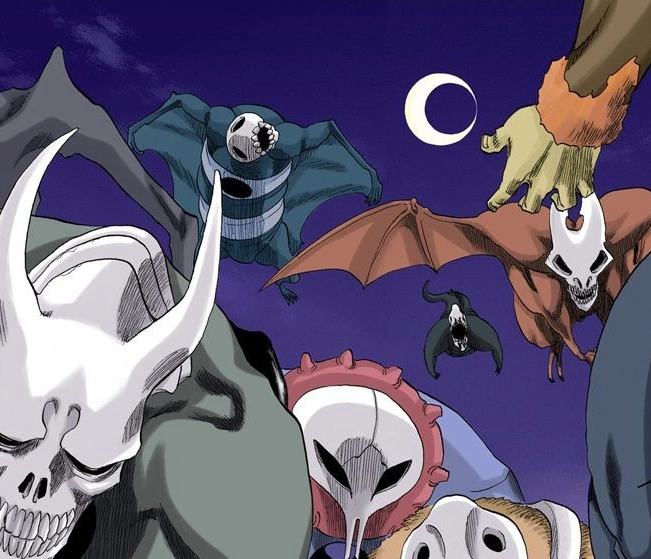

Who or what is Hollow?
Hollows typically have a mask covering their face and are capable of using certain abilities, such as speed, strength, and the ability to manipulate a form of energy called Reiatsu.
Hollows in the anime Bleach are divided into several types based on their size and strength. These types of Hollows have different characteristics and abilities, which are important for the story and battle scenes in the anime.

Types of Hollow
Gillian
Popis první card
Menos Grande
Popis druhé card
Adjuchas
Popis třetí card
Vasto Lorde
Popis čtvrté card